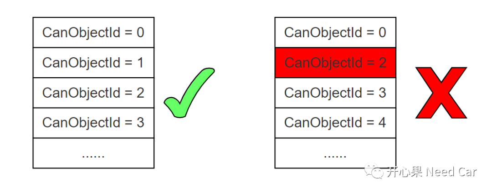
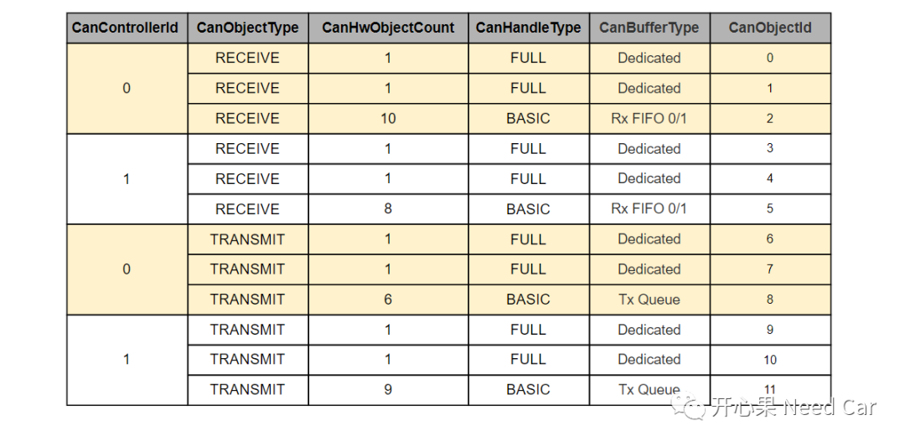

开心果 Need Car · 2022-11-04T11:20:00+08:00 · 微信原文
关于CAN的理解，前面讨论了很多，比如：CAN通信：Basic CAN与FIFO、CAN通信基础：采样原理、CAN通信基础：错误帧等等。当然，CAN还有很多细节值得细说，本文焦点：CAN hardware object配置规则。也就是Mailbox的配置规则，如果不按照规则配置，报文将无法达到预期的通信效果。
提示：本文讨论英飞凌Mcal配置规则
MCMCAN模块的接收缓存区支持两种模式：Rx FIFO、Dedicated Rx Buffer。对于TC3xx系列，Rx FIFO又分为Rx FIFO0与Rx FIFO1；发送缓冲区也支持两种模式：Tx Queue、Tx Dedicated Buffer。
配置的过程中，可以为HOH (hardware object handler)选择一种缓存方式。但是，配置要守规矩（rule），对于HTH（Hardware Transmit Handle）和HRH（Hardware Receive Handle）需要注意以下规则：
CanObjectId的配置规则如下：
CanObjectId需要从0开始配置，且连续，中间不能有间隔（Gap），示意如下；

同一个Controller的HRHs (CanObjectId)放在一起排布；
同一个Controller的HTHs (CanObjectId)放在一起排布；
如果配置了多个Controller，则每个Controller的HRHs (CanObjectId)放在一起排布；
如果配置了多个Controller，则每个Controller的HTHs (CanObjectId)放在一起排布；
Controller的HRHs要排布在HTHs之前；
使用Dedicated Rx Buffer类型的HRHs排布在使用Rx FIFO类型的HRHs的前面，即：FULL CAN排在BASIC CAN之前；
Dedicated Tx Buffer类型的HTHs排布在Tx Queue类型的HTHs的前面，即：FULL CAN排在BASIC CAN之前。
按照上述规则，CanObject的配置示意如下所示：

往期精彩回顾